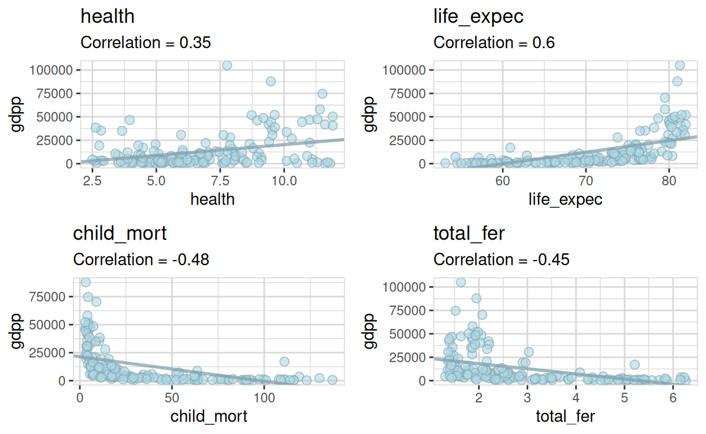
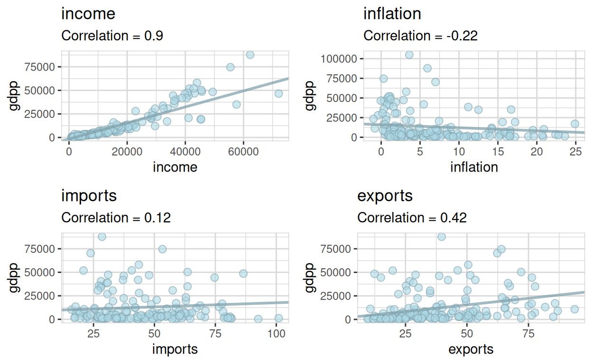
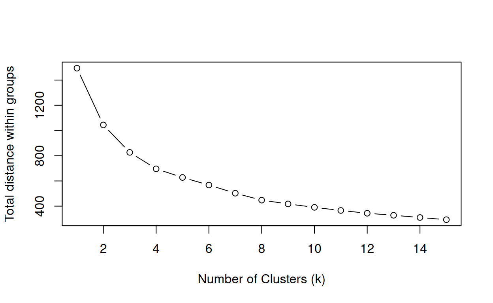
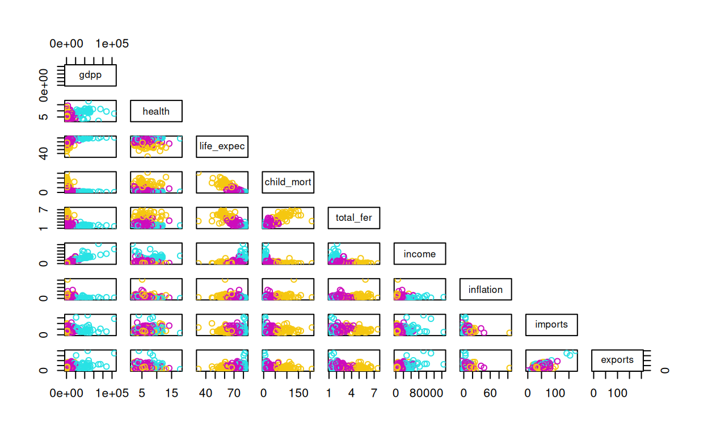
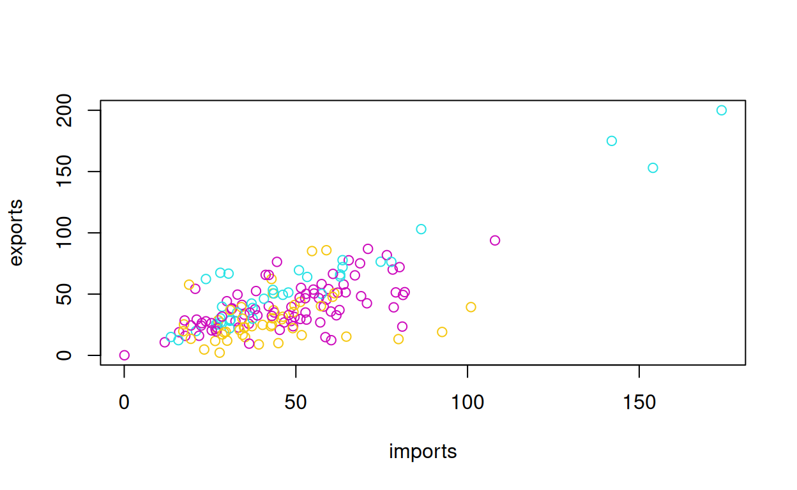
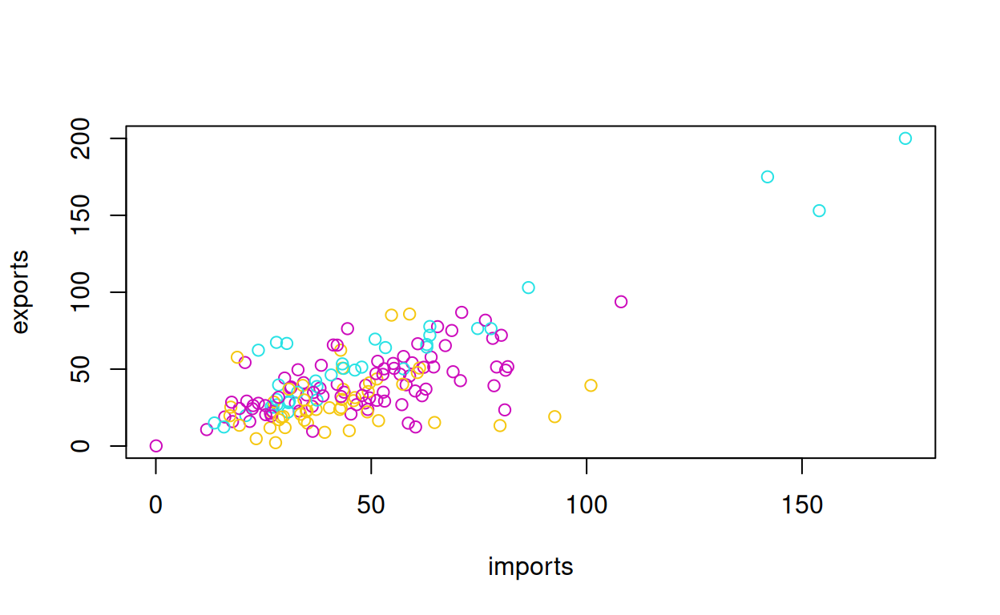
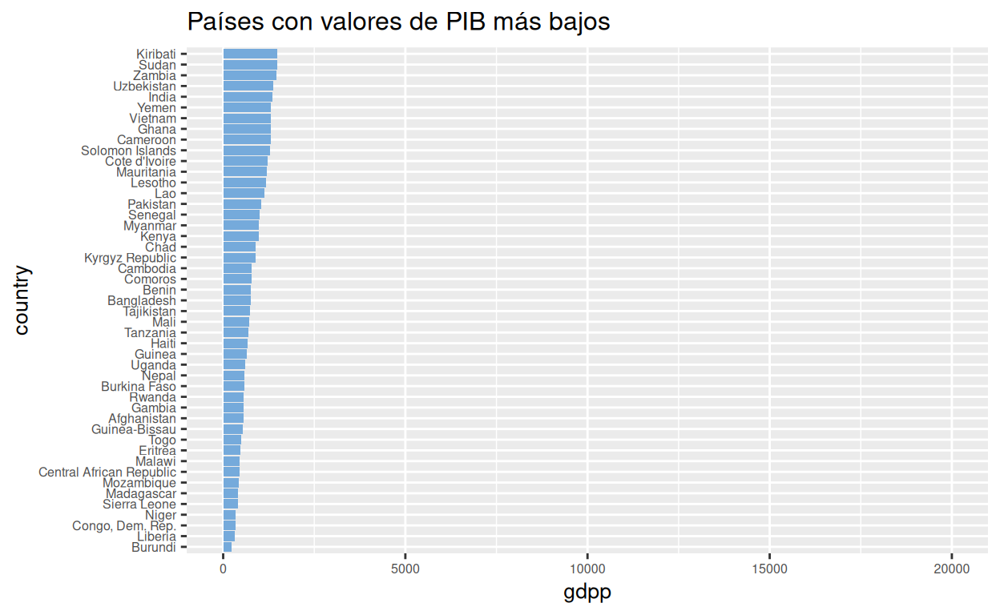
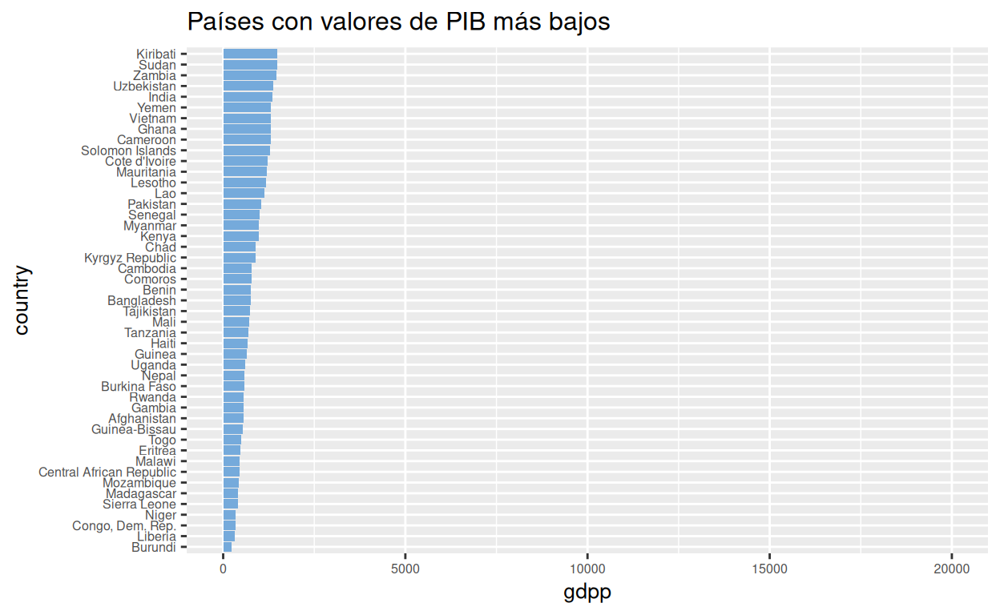
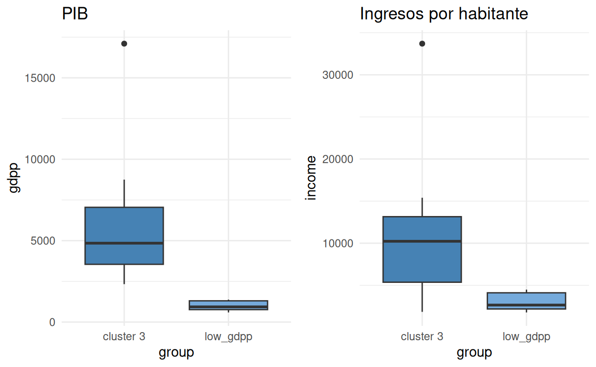

Decisiones difíciles
HELP International es una ONG humanitaria internacional que la lucha contra la pobreza y proporciona servicios básicos y socorro a la población de los países atrasados, especialmente frente a desastres naturales.
HELP International recaudó alrededor de $10 millones USD y quiere utilizar ese dinero de forma estratégica para desarrollar campañas de ayuda en los países que más lo necesiten.
¿Cómo decidimos qué países necesitan más ayuda? 🤔
HELP International contaba con una tabla de datos sociodemográficos (descargar1) de 167 países candidatos con las siguientes variables:
- País (country): Nombre del país.
- Mortalidad infantil (child_mort): Muerte de niños menores de 5 años por cada 1.000 nacidos vivos.
- Exportaciones (export): Exportaciones de bienes y servicios per cápita. Dado el porcentaje del PIB per cápita.
- Salud (health): gasto total en salud per cápita. Dado el porcentaje del PIB per cápita.
- Importaciones (import): Importaciones de bienes y servicios per cápita. Dado el porcentaje del PIB per cápita.
- Ingresos (income): Ingresos netos por persona.
- Inflación (inflation): Inflación en relación al crecimiento anual del PIB total.
- Esperanza de vida (life_expec): Promedio de años que viviría un niño recién nacido si los patrones actuales de mortalidad sigan siendo los mismos.
- Fertilidad (tot_fert): Número de hijos que nacería de cada mujer si las tasas actuales de fecundidad por edad siguen siendo las mismas.
- Producto interno bruto (gdpp): PIB per cápita. Calculado como el PIB total dividido por la población total.
La Tabla 1 muestra los 15 países con el PIB más bajo, y los valores de algunas de estas variables.
Tabla 1. Países con el PIB más bajo. | |||||
|---|---|---|---|---|---|
País | PIB | Ingreso | Gasto Salud | Esp. vida | Mort. Infantil |
Burundi | 231 | 764 | 11.60 | 57.7 | 93.6 |
Liberia | 327 | 700 | 11.80 | 60.8 | 89.3 |
Congo, Dem. Rep. | 334 | 609 | 7.91 | 57.5 | 116.0 |
Niger | 348 | 814 | 5.16 | 58.8 | 123.0 |
Sierra Leone | 399 | 1,220 | 13.10 | 55.0 | 160.0 |
Madagascar | 413 | 1,390 | 3.77 | 60.8 | 62.2 |
Mozambique | 419 | 918 | 5.21 | 54.5 | 101.0 |
Central African Republic | 446 | 888 | 3.98 | 47.5 | 149.0 |
Malawi | 459 | 1,030 | 6.59 | 53.1 | 90.5 |
Eritrea | 482 | 1,420 | 2.66 | 61.7 | 55.2 |
Togo | 488 | 1,210 | 7.65 | 58.7 | 90.3 |
Guinea-Bissau | 547 | 1,390 | 8.50 | 55.6 | 114.0 |
Afghanistan | 553 | 1,610 | 7.58 | 56.2 | 90.2 |
Gambia | 562 | 1,660 | 5.69 | 65.5 | 80.3 |
Rwanda | 563 | 1,350 | 10.50 | 64.6 | 63.6 |
Una primera aproximación sería usar el PIB como un criterio de selección, así que lo primero que haremos será correlacionarlo con el resto de nuestras variables.

Figura1. Correlación del PIB (gdpp) con las otras variables socioeconómicas: health, gasto en salud; life_expec, esperanza de vida; child_mort, mortalidad infantil; total_fer, tasa de fertilidad; income, ingreso; inflation, inflación; imports, importaciones; exports, exportaciones. Cada punto representa un país.
La Figura 1 muestra que el PIB tiene diferentes grados de correlación con el resto de variables sociodemográficas, por lo que podría utilizarse como un criterio de selección, eligiendo simplemente los países con los valores de PIB más bajos.
¿Podemos hacer algo mejor que elegir en función del PIB? ¿Es posible integrar el resto de las variables en un único criterio de selección? 🤔
Para comenzar a responder a estas preguntas, podemos explorar si existen patrones de agrupación de los países de acuerdo a sus características.
Si correlacionamos la esperanza de vida y el gasto en salud y los graficamos junto con el PIB y el ingreso por habitante (Fig. 2) vemos que los países tienden a formar pequeñas agrupaciones.

Figura 2. Correlación del gasto en salud (health) y la esperanza de vida (life_expec). Cada país está representado por un punto en la gráfica; su tamaño es directamente proporcional al PIB (gdpp) y su color se ajusta al nivel de ingresos por habitante (income).
Lo mismo ocurre si correlacionamos el gasto en salud y la mortalidad infantil y los graficamos junto con el PIB y el ingreso por habitante (Fig. 3).

Figura 3. Correlación del gasto en salud (health) y la mortalidad infantil (child_mort). Cada país está representado por un punto en la gráfica; su tamaño es directamente proporcional al PIB (gdpp) y su color se ajusta al nivel de ingresos por habitante (income).
¿Podemos explotar de alguna manera estos patrones de agrupación? 🤔
Análisis de agrupación por k-medias
La agrupación (clustering) es una técnica de aprendizaje automático que nos ayuda descubrir patrones y estructuras ocultas entre nuestras variables.
La técnica k-medias (k-means) agrupa conjuntos de casos similares (por ejemplo países) utilizando variables numéricas (también llamadas dimensiones). La agrupación se lleva a cabo a minimizando las distancias entre k grupos de casos (clústers), siendo k un número entero que conocemos de antemano o que podemos llegar a estimar (Fig. 4)

Figura 4. Agrupación de casos en dos grupos (k = 2). Cada uno de los ejes corresponde a una variable numérica. La distancia media entre los puntos rojos y azules (líneas de colores) y el centro de cada grupo (puntos verdes) sirve para llevar a cabo la agrupación.
El primer paso para llevar a cabo el análisis de agrupación por k-medias es la normalización de los datos, con el fin de que las diferencias en las escalas de medición de cada variable no generen sesgos en las relaciones entre las variables.
La Figura 5 muestra las medias y las desviaciones estándar de cada una de las variables antes (paneles superiores) y después (paneles inferiores) de la normalización.

Figura 5. Medias y desviaciones estándar de cada variable, antes (paneles superiores) y después (paneles inferiores) de la normalización de los datos.
Como no sabemos de antemano cuántos grupos hay dentro de nuestros datos, hacemos un análisis de agrupación por k-medias serializado con los datos normalizados. Usamos valores de k de 1 a 15 (siendo k el número de agrupaciones esperado) y graficamos la suma total de las distancias entre grupos (Fig. 6): buscamos dentro del gráfico un valor de k en el que la distancia total entre grupos (total distance within groups) comience a tener un comportamiento asintótico.

Figura 6. Análisis serializado de la distancia total entre grupos (total distance within groups).
Aunque la reducción de la distancia entre grupos es bastante paulatina, podríamos elegir k = 3 (es decir tres grupos) para continuar con el análisis y ver cómo se comportan los datos.
Creamos el modelo de agrupación con 3 grupos. Una vez que tenemos los datos normalizados, el código en R para la generación de este modelo es bastante sencillo:
La Tabla 2 contiene una muestra aleatoria de 10 países y la afiliación de cada uno a un k grupo (Grupos 1 a 3).
Tabla 2. Muestra aleatoria de 10 países y su afiliación a cada uno de los k grupos. | |
|---|---|
País | Grupo |
Portugal | 1 |
Estonia | 2 |
Peru | 2 |
Croatia | 2 |
Mauritania | 3 |
United States | 1 |
United Arab Emirates | 1 |
Italy | 1 |
Serbia | 2 |
Madagascar | 3 |
Distribución de las variables en los distintos k grupos
Para explorar la eficacia de la agrupación, realizamos un análisis de correlación dos a dos con cada una de las variables de nuestra tabla de datos, coloreando los puntos en función del k grupo al que pertenecen (Fig. 7).
 

Figura 7. Análisis de correlación dos a dos con cada una de las variables de nuestra tabla de datos. Los colores corresponden a cada uno de los k grupos. Cada punto representa un país. Gdpp, PIB; health, gasto en salud; life_expec, esperanza de vida; child_mort, mortalidad infantil; total_fer, tasa de fertilidad; income, ingreso; inflation, inflación; imports, importaciones; exports, exportaciones.
Como podemos ver en la Figura 7, muchas de las correlaciones entre variables muestran una clara separación de países en grupos, por ejemplo, esperanza de vida (life_expec) y mortalidad infantil (child_mort). Sin embargo, la distinción entre grupos de países no es tan clara para otras variables; como por ejemplo, importaciones (imports) y exportaciones (exports).
A continuación, analizamos el valor del PIB para cada uno de los grupos. La Figura 8 muestra que el k grupo 3 es el que tiene el valor de PIB más bajo.

Figura 8. Análisis del PIB (gdpp) por k grupo (cluster).
A continuación analizamos la distribución de cada una de las variables en función de la afiliación de cada país a su k grupo (Figura 9).


Figura 9. Distribución de cada una de las variables en función de la afiliación de los países a su k grupo correspondiente (cluster). Health, gasto en salud; life_expec, esperanza de vida; child_mort, mortalidad infantil; total_fer, tasa de fertilidad; income, ingreso; inflation, inflación; imports, importaciones; exports, exportaciones.
La Figura 9 muestra que los países que pertenecen al k grupo 3 tienen los peores valores para casi todas las variables sociodemográficas; por ejemplo, gasto en salud, esperanza de vida, mortalidad infantil, e ingreso por habitante.
🥳 El análisis de agrupación por k-medias nos ha permitido identificar claramente un grupo de países con las peores variables sociodemográficas. Pero… ¿podríamos haber usado simplemente los valores de PIB más bajos como filtro? 🤔
¿Y si sólo usamos el PIB como criterio de selección?
La Figura 10 muestra la distribución de PIB de los 47 países que integran el k grupo 3 y de los 47 países con el PIB más bajo.
 

Figura 10. Distribución del PIB (gdpp) de los países (country) del k grupo 3 y de los 47 países con el PIB más bajo.
Resulta evidente que hay una gran diferencia en la distribución del PIB en los países del k grupo 3 y los países con el PIB más bajo, ya que el k grupo 3 incluye países con altos valores de PIB.
La Tabla 3 muestra los países del k grupo 3 que no están en la lista de países con el PIB más bajo de la Figura 10 y los países con PIB más bajo que no pertenecen al k grupo 3; llamémosles países “divergentes”.
Tabla 3. Países Divergentes | |
|---|---|
País | Grupo |
Angola | cluster 3 |
Botswana | cluster 3 |
Congo, Rep. | cluster 3 |
Equatorial Guinea | cluster 3 |
Gabon | cluster 3 |
Iraq | cluster 3 |
Namibia | cluster 3 |
Nigeria | cluster 3 |
South Africa | cluster 3 |
Timor-Leste | cluster 3 |
Nepal | low_gdpp |
Tajikistan | low_gdpp |
Bangladesh | low_gdpp |
Cambodia | low_gdpp |
Kyrgyz Republic | low_gdpp |
Myanmar | low_gdpp |
Solomon Islands | low_gdpp |
Vietnam | low_gdpp |
India | low_gdpp |
Uzbekistan | low_gdpp |
Cluster 3, k grupo 3; low_gdpp, PIB bajo. | |
¿Qué hace diferentes a los países “divergentes”? 🤔
¿Además del PIB qué caracteriza a los países del k grupo 3?
Para contestar a esta pregunta, podemos comparar la distribución de cada una de nuestras variables a través de gráficos de caja y bigotes (box plots, Figs. 11-12).


Figura 11. Distribución de variables socio-económicas en países divergentes. Health, gasto en salud; life_expec, esperanza de vida; child_mort, mortalidad infantil; total_fer, tasa de fertilidad; group, grupo.
La Figura 11 muestra que, a pesar de que el gasto en salud es similar entre los países con PIB bajo y los del k grupo 3 (la mediana y el rango son similares), la esperanza de vida es menor en los países del k grupo 3 mientras que la mortalidad infantil y la tasa de fertilidad son mayores.


Figura 12. Distribución de variables económicas en países divergentes. Gdpp, PIB; income, ingreso; inflation, inflación; imports, importaciones; exports, exportaciones; group, grupo.
La Figura 12 muestra que tanto el PIB como el ingreso por habitante son mayores en los países del k grupo 3 y que no existen diferencias tan acusadas en importaciones y exportaciones.
La Tabla 4 muestra los 10 países del k grupo 3 con los valores de PIB más altos; entre ellos vemos países como Iraq y Guinea Ecuatorial, cuya riqueza viene de la explotación petrolera aunque existen altos niveles de desigualdad socioeconómica.
Tabla 4. Países del k grupo 3 con el PIB más alto | |
|---|---|
País | PIB |
Equatorial Guinea | 17,100 |
Gabon | 8,750 |
South Africa | 7,280 |
Botswana | 6,350 |
Namibia | 5,190 |
Iraq | 4,500 |
Timor-Leste | 3,600 |
Angola | 3,530 |
Congo, Rep. | 2,740 |
Nigeria | 2,330 |
¿Cuál es nuestra recomendación para HELP International? 🤓
Nuestra recomendación
Nuestra recomendación a HELP International sería invertir los fondos recaudados en los países del k grupo 3, ya que éstos se caracterizan por tener altos niveles de mortalidad infantil y menor esperanza de vida, a pesar de que algunos de ellos tengan un PIB medio y un ingreso por habitante superior al de países con los valores de PIB más bajos.
Disminuir la mortalidad infantil y aumentar la esperanza de vida son objetivos que van en la línea de lo que HELP International desea aportar a la sociedad.
Conclusión del análisis2
🔍 La técnica de agrupación por k-medias nos ha permitido integrar 9 variables en un único criterio de selección (afiliación al k grupo 3) para identificar a los 47 países más vulnerables.
🏥 Las características que distinguen a los países del k grupo 3 de otros países con bajos niveles de PIB nos permiten afirmar que éstos podrían beneficiarse significativamente de programas sociales por HELP International, dirigidos especialmente al área de la salud.